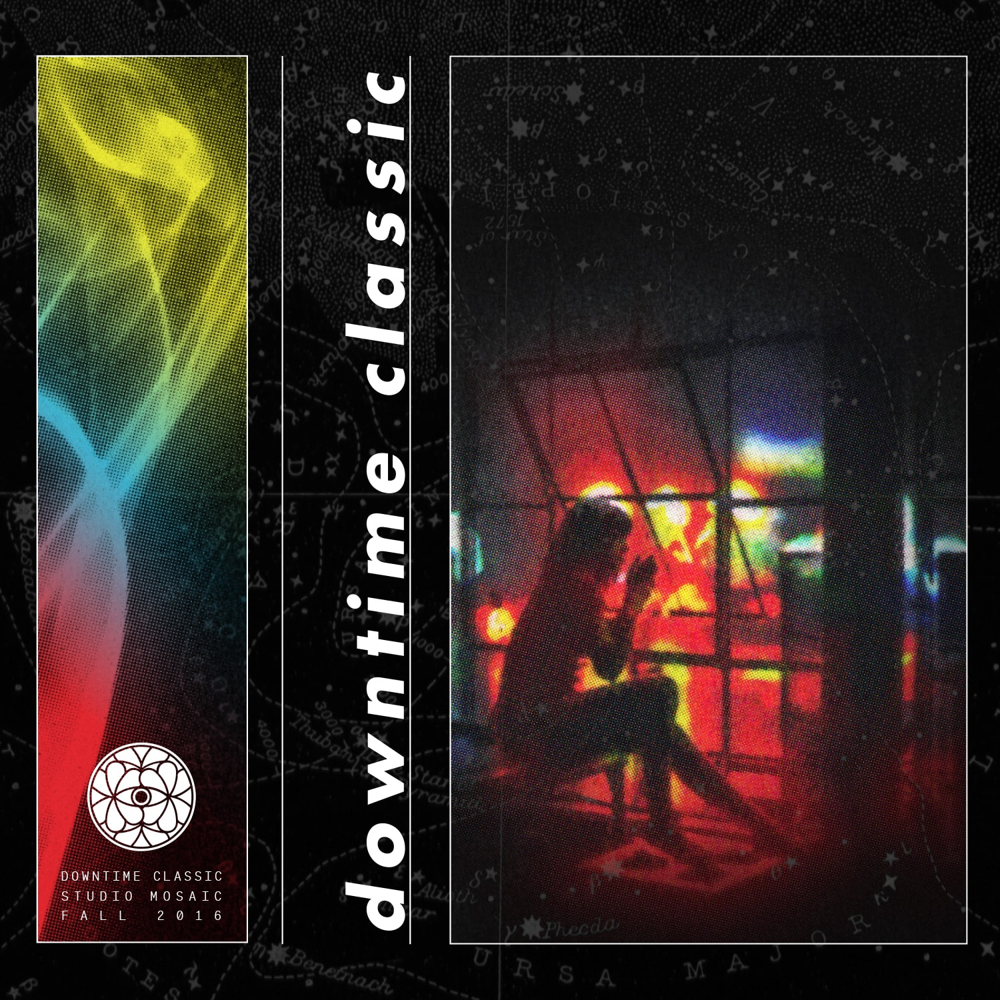

A Downtempo & Trip-Hop Mix by Studio Mosaic

Downtime Classic is a two-part compilation of downtempo and trip-hop classics - two interconnected subgenres of slower paced electronic music that originated in the 1990s throughout European chillout rooms.
Coined in 1994, trip hop emerged from Bristol, UK which combined elements of hip hop beats, drum and bass breaks, and ambient atmospheres at a lower tempo. At the end of the 1990s a more melodic instrumental electronica incorporating acoustic sounds emerged under its own umbrella name of downtempo.
Although trip hop is known for its moody, dark, yet lyrical sound with female-dominant vocals, both styles of music fuse elements of jazz, R&B, dub, and house. As a result, many tracks are historically lo-fi, relying on analog recording equipment and sample-based instrumentation for an ambience. Today, trip hop influences can be found in many other genres including soul, IDM, industrial, dubstep, acid jazz, and new-age.
While putting together this mix, we tried to include a wide variety of artists, ranging from countries such as England, Ireland, Scotland, France, Germany, Austria, Brazil, Japan, and the United States. It’s also worth noting that when an artist had multiple worthy albums, we only included their most definitive moment.
00:00 DJ Cam - Mad Blunted Jazz
04:52 Skalpel - Sculpture
09:39 Kruder & Dorfmeister - 1st of the Month
15:28 Herbalist - Put It On Tape
19:10 Thievery Corporation - 2001 Spliff Odyssey
24:11 DJ Shadow - Napalm/Scatter Brain
24:52 Nightmares on Wax - You Wish
28:11 Blockhead - Triptych Pt. 2
31:07 Bonobo - Shadowtricks
35:08 TM Juke - Fast Asleep
39:18 Kid Loco - She Woolf Daydreaming
44:12 Wax Tailor - Que Sera
46:55 Lovage - Lies & Alibis
50:05 Aim - Hinterland
54:12 Amon Tobin - Like Regular Chickens
59:16 Boards of Canada - In a Beautiful Place Out in the Country
1:04:44 DJ Krush & Toshinori Kondo - Mu Chu
1:10:57 Lamb - Trans Fatty Acid (Kruder & Dorfmeister Remix)
1:19:19 Tosca - Brian Emely
1:24:10 Air - Modular Mix
1:29:48 Prefuse73 - Pagina Dos
1:32:16 Prefuse73 - Gratis
1:37:33 Lemon Jelly - Nervous Tension
1:43:44 Flying Lotus - Next Phase Short
1:44:12 RJD2 - Ghost Writer
1:49:26 Moby - Porcelain
1:53:25 Gorillaz - Tomorrow Comes Today
1:56:36 Hooverphonic - Inhaler
2:01:44 Sneaker Pimps - 6 Underground
2:05:32 Alphawezen - Gun Song (Alphawezen Dub Remix)
2:09:53 Archive - So Few Words
2:16:05 Massive Attack - Teardrop
2:21:27 Portishead - Strangers
2:24:57 Tricky - Overcome
2:28:30 Zero7 - In The Waiting Line
2:32:47 Air - La Femme D’Argent
Genre: Downtempo / Trip Hop
Release: Oct 2016
Duration: 02:39:44
Listener Accessibility: 8/10